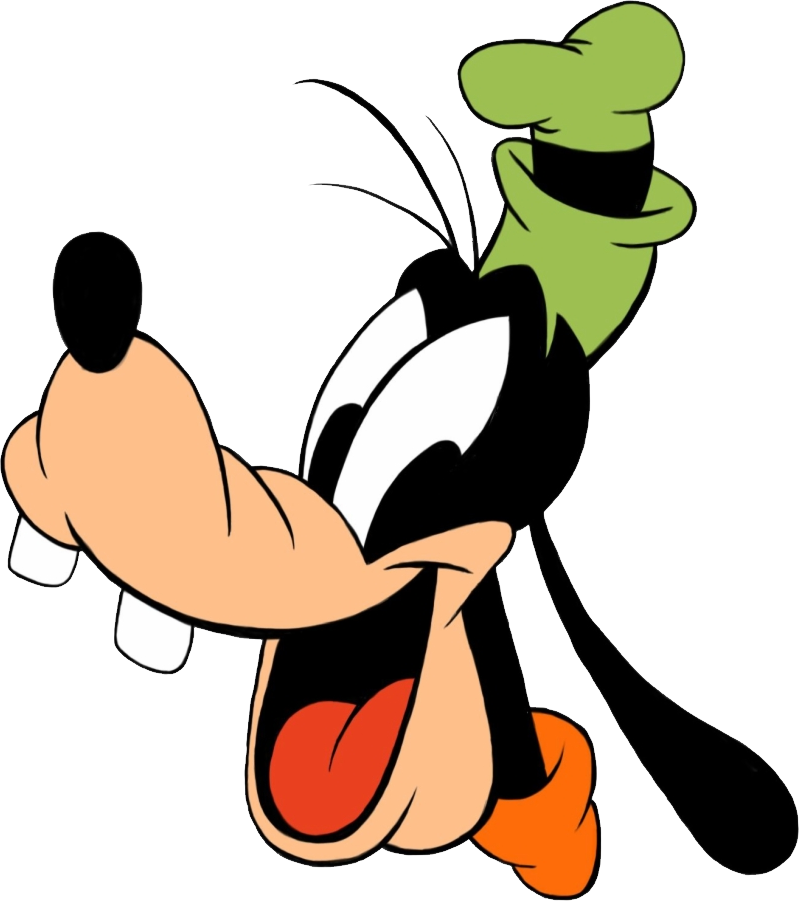

Mickey Mouse
Mickey Mouse is a cartoon character created in 1928 by Walt Disney and Ub Iwerks. He is an anthropomorphic mouse who typically wears red shorts, large yellow shoes, and white gloves.

Donald Duck
Donald Duck is a cartoon character created in 1934 by Walt Disney Productions. He is an anthropomorphic white duck with a yellow-orange bill, legs, and feet.

Goofy
Goofy is a cartoon character created in 1932 by Walt Disney Productions. He is an anthropomorphic dog.